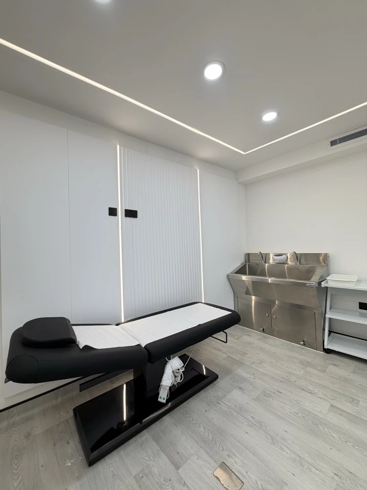

Safety before speed
Training prioritises judgement, contraindications, infection control and appropriate escalation.
Medical Wellness Academy delivers focused aesthetics, wellness and regenerative education from 61 Mansell Street, London. The Academy is built around clear teaching, clinical judgement and practical development.

Good training is more than demonstrating a procedure. Programmes are structured around relevant anatomy, consultation, contraindications, infection control, complications awareness, documentation and professional boundaries.
Where practical treatment forms part of a course, learners are expected to demonstrate supervised competency against the relevant assessment criteria.
From the first enquiry to course day, the focus stays on what you are learning, how it applies and what you need to progress responsibly.
Train at 61 Mansell Street in a London clinic environment, connecting learning with professional practice.
Choose a structured pathway, a specialist masterclass or an individual activity.
Eligibility, scope, assessment and certificate information are confirmed for the programme you choose.
Training prioritises judgement, contraindications, infection control and appropriate escalation.
Learners are expected to work within competence, scope and insurance.
Certification depends on the published requirements of the relevant course, not attendance alone.
Clinical and scientific claims are separated from marketing language and product-specific instructions.